<meta charset="utf-8">
<title>Five Farm Animals</title>
<style>
  @page { size: A4 landscape; margin: 14mm 15mm 12mm; }
  :root {
    --ink:#23221f; --mid:#5d5a52; --faint:#8c887e; --rule:#d6d2c8;
    --paper:#ffffff; --panel:#f4f3ef; --accent:#7a5c2e;
  }
  * { box-sizing:border-box; }
  body {
    margin:0; background:var(--paper); color:var(--ink);
    font-family:"Iowan Old Style","Palatino Linotype",Palatino,Georgia,serif;
    font-size:9.6pt; line-height:1.5;
  }
  code, pre, .mono { font-family:"Cascadia Mono",Consolas,"DejaVu Sans Mono",monospace; }
  h1,h2,h3 { font-family:"Cascadia Mono",Consolas,monospace; font-weight:600; margin:0; }
  h1 { font-size:23pt; letter-spacing:-0.4pt; line-height:1.15; }
  h2 { font-size:12pt; letter-spacing:0.4pt; text-transform:uppercase;
       padding-bottom:3pt; border-bottom:1.4pt solid var(--ink); margin-bottom:9pt; }
  h3 { font-size:9.6pt; letter-spacing:0.2pt; }
  p { margin:0 0 6pt; }
  a { color:inherit; }
  .page { page-break-after:always; break-after:page; }
  .page:last-child { page-break-after:auto; break-after:auto; }
  .lede { font-size:11pt; color:var(--mid); line-height:1.45; max-width:150mm; }
  .kicker { font-family:"Cascadia Mono",Consolas,monospace; font-size:8pt;
            letter-spacing:1.6pt; text-transform:uppercase; color:var(--faint); }
  .rule { height:1.4pt; background:var(--ink); margin:7pt 0 9pt; }
  .cols2 { column-count:2; column-gap:9mm; }
  .cols3 { column-count:2; column-gap:6mm; }
  .avoid { break-inside:avoid; page-break-inside:avoid; }
  .strip { width:100%; }
  .strip img { width:100%; display:block; }
  .crop { overflow:hidden; position:relative; background:var(--panel);
          border:0.8pt solid var(--rule); border-radius:2pt; }
  .crop img { position:absolute; max-width:none; }
  pre.prog { font-size:7.2pt; line-height:1.35; background:var(--panel);
             border-left:2pt solid var(--accent); padding:4pt 6pt; margin:5pt 0 0;
             white-space:pre; overflow:hidden; }
  table { width:100%; border-collapse:collapse; font-size:8.4pt; }
  th { text-align:left; font-family:"Cascadia Mono",Consolas,monospace; font-size:7.4pt;
       letter-spacing:0.8pt; text-transform:uppercase; color:var(--faint);
       border-bottom:1pt solid var(--ink); padding:0 6pt 3pt 0; }
  td { padding:3.5pt 6pt 3.5pt 0; border-bottom:0.5pt solid var(--rule);
       vertical-align:top; }
  td.mono, th.mono { font-family:"Cascadia Mono",Consolas,monospace; font-size:7.6pt;
       white-space:nowrap; }
  .help { font-size:6pt; line-height:1.42; white-space:pre; margin:0;
          color:var(--ink); }
  .card { break-inside:avoid; page-break-inside:avoid; margin-bottom:7pt; }
  .card h3 { color:var(--accent); }
  .marks { font-size:7.6pt; color:var(--faint); font-family:"Cascadia Mono",Consolas,monospace;
           margin-top:3pt; }
  .learn { break-inside:avoid; page-break-inside:avoid; margin:0 0 9pt; }
  .learn h3 { margin-bottom:2pt; }
  .learn p { font-size:9pt; color:var(--mid); margin:0; }
  .gal { display:grid; grid-template-columns:repeat(4,1fr); gap:5mm; }
  .gal figure { margin:0; break-inside:avoid; page-break-inside:avoid; }
  .gal .thumb { background:var(--panel); border:0.8pt solid var(--rule);
                border-radius:2pt; height:34mm; display:flex; align-items:center;
                justify-content:center; overflow:hidden; padding:2mm; }
  .gal img { max-width:100%; max-height:100%; object-fit:contain; }
  .gal figcaption { font-family:"Cascadia Mono",Consolas,monospace; font-size:6.6pt;
                    line-height:1.35; margin-top:2.5pt; color:var(--mid); }
  .gal figcaption b { color:var(--ink); font-weight:600; display:block;
                      word-break:break-all; }
  .badge { display:inline-block; font-family:"Cascadia Mono",Consolas,monospace;
           font-size:6.8pt; letter-spacing:0.6pt; text-transform:uppercase;
           border:0.8pt solid var(--rule); border-radius:2pt; padding:1pt 4pt;
           color:var(--mid); }
  .two { display:grid; grid-template-columns:1fr 1fr; gap:8mm; }
  .before-after { font-size:7.4pt; line-height:1.45; }
  .before-after ol { margin:3pt 0 0; padding-left:14pt; }
  .before-after li { margin-bottom:1pt; }
  .hi { background:#f0e6d2; font-weight:600; }
  footer { position:running(f); }
</style>
<section class="page">
<div class="kicker">TurtlePen · working record · 17 August 2026</div>
<h1>Five Farm Animals</h1>
<div class="rule"></div>
<p class="lede">Five animals drawn on TurtlePen’s integer lattice — every coordinate a whole 5&nbsp;px quadrant, every defect a ranked finding. This is the complete record: how each silhouette is built, which findings were real defects and which were declared anatomy, what the exercise taught, the reordered <code>turtlepen_help</code> text, and the diagrams the project has produced so far.</p>
<div class="strip" style="margin-top:6mm">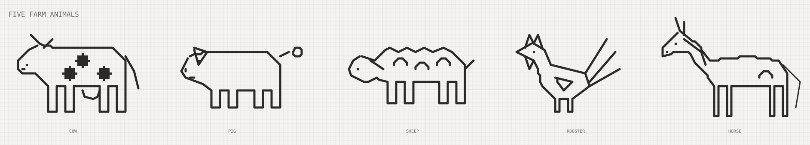</div>
<p style="margin-top:4mm;font-size:8pt;color:var(--faint)" class="mono">200 × 36 cells · 62 elements · validate CLEAN: 0 critical, 0 error, 0 warn, 0 info · 11 findings accepted as intentional</p>
<div style="margin-top:9mm;padding-top:4mm;border-top:0.8pt solid var(--rule);display:grid;grid-template-columns:repeat(6,1fr);gap:5mm;font-size:7.6pt;color:var(--mid)" class="mono">
<div><span style="color:var(--faint)">01</span><br>How the animals are built</div>
<div><span style="color:var(--faint)">02</span><br>The five, one at a time</div>
<div><span style="color:var(--faint)">03</span><br>What the collision log caught</div>
<div><span style="color:var(--faint)">04</span><br>Things learned</div>
<div><span style="color:var(--faint)">05</span><br>The help was reordered</div>
<div><span style="color:var(--faint)">06</span><br>Every SVG so far</div>
</div>
</section>
<section class="page">
<h2>How the animals are built</h2>
<div class="two">
<div>
<p><b>One polygon, legs included.</b> The obvious construction — a body outline plus four vertical leg strokes — fails twice. Each leg T-junctions into the belly and raises an <code>L006</code> stroke overlap, and starting the leg one row lower to dodge it leaves a dangling end instead. Folding the legs into the closed outline solves both, and is how a silhouette is genuinely drawn.</p>
<p>Reading the cow's back-to-front path: over the back, down the rump, then <em>down–across–up</em> for each leg with the belly between them, up the chest, round the head, and closed.</p>
<pre class="prog">AE20 → AE26   hind leg 1, outer edge down
AE26 → AC26   the hoof
AC26 → AC20   inner edge back up
AC20 → AA20   belly between the legs
AA20 → AA26   hind leg 2 … and so on</pre>
<p style="margin-top:6pt"><b>Everything else is a separate mark.</b> Horns, ears, eyes, spots, udders, combs, wattles, manes and tails are their own paths with <code>role:"artwork"</code>, so they are not checked for loose ends. Where one touches the body — an ear meeting a skull — the shared quadrant is real, and is declared with <code>accept_finding</code> rather than dodged.</p>
</div>
<div>
<div class="crop" style="width:420px;height:340px"></div>
<p class="mono" style="font-size:7.2pt;color:var(--faint);margin-top:3pt">The cow at 1.4×. Legs, belly, chest, head and back are one continuous 25-point closed path; the horn, ear, eye, mouth, udder, three spots and tail are eight more.</p>
</div>
</div>
</section>
<section class="page">
<h2>The five, one at a time</h2>
<div style="display:grid;grid-template-columns:repeat(3,1fr);gap:7mm">
<div class="card">
<div class="crop" style="width:299px;height:266px"></div>
<h3 style="margin-top:5pt">Cow</h3>
<p style="font-size:8.6pt;color:var(--mid);margin-top:2pt">Head, neck, barrel and all four legs are a single 25-point closed polygon. The blunt muzzle is two points (F16 → F14) rather than one — a single apex read as a goat.</p>
<div class="marks">horn · ear · eye · mouth · udder · 3 solid spots · tail</div>
<pre class="prog">polygon K10 O11 AB11 AE14 AE20 AE26 AC26 AC20 AA20 AA26
        Y26 Y20 S20 S26 Q26 Q20 O20 O26 M26 M20
        J17 G17 F16 F14 H12</pre>
</div>
<div class="card">
<div class="crop" style="width:306px;height:274px"></div>
<h3 style="margin-top:5pt">Pig</h3>
<p style="font-size:8.6pt;color:var(--mid);margin-top:2pt">Same skeleton, different proportions: deeper barrel, legs stopped four rows short, and a blunt two-point snout. The ear is a triangle that deliberately crosses the skull line — that is how a pig's ear sits.</p>
<div class="marks">floppy ear · eye · snout crease · mouth · curly tail (ray + circle)</div>
<pre class="prog">polygon AT13 AX12 BL12 BO15 BO21 BO25 BM25 BM21 BK21 BK25
        BI25 BI21 BE21 BE25 BC25 BC21 BA21 BA25 AY25 AY21
        AV19 AS18 AR16 AS14</pre>
</div>
<div class="card">
<div class="crop" style="width:317px;height:274px"></div>
<h3 style="margin-top:5pt">Sheep</h3>
<p style="font-size:8.6pt;color:var(--mid);margin-top:2pt">Fleece is the outline itself: ten alternating points across the back. The first attempt used 2-row spikes every 3 cells and read as a stegosaurus; 1-row bumps every 2 cells read as wool.</p>
<div class="marks">back-swept ear · eye · 3 interior fleece arcs · short upturned tail</div>
<pre class="prog">polygon CH13 CK14 CM12 CO11 CQ12 CS11 CU12 CW11 CY12 DA11
        DC12 DD13 DF15 DF19 DF24 DD24 DD19 DB19 DB24 CZ24
        CZ19 CT19 CT24 CR24 CR19 CP19 CP24 CN24 CN19 CK18
        CI19 CF18 CE16 CF14</pre>
</div>
</div>
</section>
<section class="page">
<h2>The five, one at a time <span class="badge">continued</span></h2>
<div style="display:grid;grid-template-columns:repeat(3,1fr);gap:7mm">
<div class="card">
<div class="crop" style="width:281px;height:274px"></div>
<h3 style="margin-top:5pt">Rooster</h3>
<p style="font-size:8.6pt;color:var(--mid);margin-top:2pt">The only upright body. Two 1-cell legs instead of four 2-cell ones, and the tail is three separate rays fanning off the rump vertex rather than part of the outline.</p>
<div class="marks">zigzag comb · wattle · eye · triangle wing · 3 tail plumes</div>
<pre class="prog">polygon DV10 DX11 DZ15 ED16 EH17 EI20 EE23 EE26 ED26 ED23
        EB23 EB26 EA26 EA23 DX20 DW16 DV14 DT13 DR12 DT11</pre>
</div>
<div class="card">
<div class="crop" style="width:354px;height:277px"></div>
<h3 style="margin-top:5pt">Horse</h3>
<p style="font-size:8.6pt;color:var(--mid);margin-top:2pt">Long legs and an arched neck built from an 8-point crest. The mane began as three short strokes across the neck and read as stitches; one line running parallel to the crest reads as a mane.</p>
<div class="marks">two separate ears · eye · nostril · mane line · haunch arc · 3px tail</div>
<pre class="prog">polygon FD7 FH10 FK14 FT13 GA14 GC17 GC20 GC27 GB27 GB20
        FZ20 FZ27 FY27 FY20 FP20 FP27 FO27 FO20 FM20 FM27
        FL27 FL20 FJ17 FH15 FF12 FC12 EZ13 EZ11</pre>
</div>
</div>
</section>
<section class="page">
<h2>What the collision log caught</h2>
<div class="two">
<div>
<h3 style="margin-bottom:4pt">Real defects — fixed</h3>
<table><thead><tr><th class="mono">Rule</th><th>Defect and fix</th></tr></thead><tbody>
<tr><td class="mono">L006</td><td><b>horse-haunch crossed the rump outline</b><br><span style="color:var(--mid)">The haunch arc (r=4 at GA18) reached col 185, exactly where the rump edge and hind-leg line sit. Moved to FX18 with r=3, fully inside the barrel.</span></td></tr>
<tr><td class="mono">L006</td><td><b>two horse tail strands shared 5 quadrants</b><br><span style="color:var(--mid)">Both strands swept the same corridor. Three re-routes each collided somewhere else; the honest fix was one strand drawn at width 3 — a horse has one tail.</span></td></tr>
<tr><td class="mono">L006</td><td><b>pig ear covered the pig's eye</b><br><span style="color:var(--mid)">Widening the ear to read as a flop put its inner edge through AV14. Caught in rehearsal, before commit: the ear was narrowed instead of moving the eye.</span></td></tr>
<tr><td class="mono">visual</td><td><b>cow spots read as plus-signs</b><br><span style="color:var(--mid)">tone:"half" discs at r=2 dither to a 5-quadrant cross. Spots are solid — dropped the tone and went to r=3.</span></td></tr>
<tr><td class="mono">visual</td><td><b>cow and horse 'ears' read as flags</b><br><span style="color:var(--mid)">A two-ray polyline from one root point renders as a filled-looking V. Split into separate single-ray marks.</span></td></tr>
<tr><td class="mono">visual</td><td><b>sheep read as a stegosaurus</b><br><span style="color:var(--mid)">Amplitude, not concept: the fleece zigzag was too coarse. Halved the amplitude and doubled the frequency.</span></td></tr>
</tbody></table>
</div>
<div>
<h3 style="margin-bottom:4pt">Declared anatomy — accepted</h3>
<p style="font-size:8.4pt;color:var(--mid)">Each carries a written reason and lapses automatically if the geometry moves.</p>
<table><thead><tr><th>Paths</th><th class="mono">Qd</th><th>Reason</th></tr></thead><tbody>
<tr><td class="mono">cow-body / cow-horn</td><td class="mono">1</td><td style="color:var(--mid)">horn grows from the poll vertex</td></tr>
<tr><td class="mono">cow-body / cow-ear</td><td class="mono">1</td><td style="color:var(--mid)">ear is rooted on the neckline behind the poll</td></tr>
<tr><td class="mono">cow-body / cow-udder</td><td class="mono">2</td><td style="color:var(--mid)">udder attaches to the belly line — it must touch</td></tr>
<tr><td class="mono">pig-body / pig-ear</td><td class="mono">3</td><td style="color:var(--mid)">a pig's ear flops forward across the skull line</td></tr>
<tr><td class="mono">sheep-body / sheep-tail</td><td class="mono">1</td><td style="color:var(--mid)">tail springs from the rump edge</td></tr>
<tr><td class="mono">rooster-body / rooster-comb</td><td class="mono">3</td><td style="color:var(--mid)">comb sits on the skull line, touching at three peaks</td></tr>
<tr><td class="mono">rooster-body / rooster-wattle</td><td class="mono">3</td><td style="color:var(--mid)">wattle hangs from the chin line at both ends</td></tr>
<tr><td class="mono">rooster-body / rooster-plume-1</td><td class="mono">1</td><td style="color:var(--mid)">plume grows out of the tail-base vertex</td></tr>
<tr><td class="mono">rooster-body / rooster-plume-3</td><td class="mono">1</td><td style="color:var(--mid)">plume grows out of the rump vertex</td></tr>
<tr><td class="mono">horse-body / horse-ear-1</td><td class="mono">1</td><td style="color:var(--mid)">near ear is rooted at the poll vertex</td></tr>
<tr><td class="mono">horse-body / horse-ear-2</td><td class="mono">1</td><td style="color:var(--mid)">off ear is rooted on the crest behind the poll</td></tr>
</tbody></table>
<p style="font-size:8.4pt;color:var(--mid);margin-top:6pt"><b>Five more lapsed.</b> Redrawing the cow, sheep, horse and pig retired their earlier acceptances as <em>stale</em> rather than carrying them silently forward.</p>
</div>
</div>
</section>
<section class="page">
<h2>Things learned</h2>
<div class="cols2">
<div class="learn"><h3>A clean log is not a finished drawing</h3><p><code>validate</code> returned CLEAN while the sheep read as a stegosaurus, the cow's horn and ear rendered as a flag, and the udder read as a smile. Every one of those was found by rasterising the SVG and looking at it. The help says this outright — it is now on page one of the help rather than line 212.</p></div>
<div class="learn"><h3>Draw legs as part of the outline, not as separate strokes</h3><p>The obvious approach — a body polygon plus four vertical leg strokes — T-junctions every leg into the belly and raises an L006 per leg. Folding the legs into the closed outline gives exact geometry <em>and</em> better line art: it is how a silhouette is actually drawn. All five animals use it.</p></div>
<div class="learn"><h3><code>ascii</code> proves structure; only a raster proves identity</h3><p>The ASCII dump confirmed the cow's belly, leg gaps and spot placement were quadrant-exact. It could not tell me the head read as a goat. Use ASCII to verify you drew what you meant, and the render to verify it means what you wanted.</p></div>
<div class="learn"><h3><code>accept_finding</code> is where anatomy gets declared</h3><p>An ear touching a skull <em>is</em> a shared quadrant. Eleven findings were accepted with a stated reason; two that looked identical were real defects. Bulk-accepting L006 would have shipped both.</p></div>
<div class="learn"><h3>Lapsed acceptances did exactly their job</h3><p>Redrawing the cow, sheep, horse and pig retired five acceptances as <em>stale</em> rather than carrying them forward. An acceptance that survived a geometry change would be indistinguishable from a missed defect.</p></div>
<div class="learn"><h3>Rehearse before commit — fixes introduce collisions</h3><p>Widening the pig's ear put it through the pig's eye. <code>plan</code> without <code>commit</code> surfaced that against a throwaway copy, so the document never held the broken version.</p></div>
<div class="learn"><h3>Column arithmetic past Z is the main source of address error</h3><p>Cols 27–190 span AA–GH. The ASCII header row is ground truth for what actually landed — I mis-read its column offset once and briefly believed three correct spots were misplaced.</p></div>
<div class="learn"><h3>A running MCP server holds its help in memory</h3><p>Editing <code>src/mcp/tools.js</code> does not change what the connected session returns; <code>HELP</code> is captured at module load. The reorder was verified by importing the module directly, and reaches a session on the next server start.</p></div>
<div class="learn"><h3>Rasterising an SVG needed a fallback</h3><p>The Playwright MCP backend timed out and stayed wedged, and <code>file:</code> URLs are blocked. Headless Chrome <code>--screenshot</code> against a local static server did the job in one call — and printed this PDF.</p></div>
</div>
</section>
<section class="page">
<h2>The help was reordered</h2>
<div class="two">
<div>
<p><b>What moved.</b> <code>THE CANVAS IS NOT A BUDGET</code> and <code>WORKFLOW</code> sat at help lines 197–231, after the whole grammar reference and the connector notes. They are now lines 9–44, immediately after <code>WHY IT EXISTS</code> and before <code>THE LATTICE</code>.</p>
<p><b>Why it matters.</b> Those two sections carry the instructions an author most needs <em>before</em> drawing: that the canvas is not a budget, that a feature may be more than one stroke, that layers exist — and that the loop ends in <em>render, then look</em>. This session is the case in point: the log was clean while three of five animals were wrong. Reference material can be read on demand; the working method cannot be read after the fact.</p>
<p><b>Mechanics.</b> 36 lines moved verbatim inside the <code>HELP</code> template literal in <code>src/mcp/tools.js</code>, verified content-identical by comparing the sorted line multiset before and after. <code>pnpm run check</code>: <b>318 passed, 0 failed</b>. The help assertion in <code>test/mcp.test.js</code> checks for the presence of section names, not their order, so the move is safe by design.</p>
<p style="color:var(--mid)"><b>One caveat.</b> <code>HELP</code> is captured when the module loads, so an MCP session already connected keeps serving the old order until the server restarts.</p>
</div>
<div class="before-after">
<h3 style="margin-bottom:3pt">Before</h3>
<ol>
<li><span>WHY IT EXISTS</span></li>
<li><span>THE LATTICE</span></li>
<li><span>ADDRESSING</span></li>
<li><span>FREE SPACE</span></li>
<li><span>REGIONAL DESCRIPTION</span></li>
<li><span>DIMENSIONED COMPOSITIONS</span></li>
<li><span>HISTORY AND RECOVERY</span></li>
<li><span>GROUPS AND FOLLOW RELATIONSHIPS</span></li>
<li><span>PEN GRAMMAR</span></li>
<li><span>SHAPES</span></li>
<li><span>ANCHORS</span></li>
<li><span>ARTWORK PRESENTATION</span></li>
<li><span>TONE</span></li>
<li><span>DRAWING FROM A SOURCE</span></li>
<li><span>EXAMPLE</span></li>
<li><span>CONNECTORS</span></li>
<li><span class="hi">THE CANVAS IS NOT A BUDGET</span></li>
<li><span class="hi">WORKFLOW</span></li>
<li><span>EVERY FIX HAS A TOOL</span></li>
</ol>
<h3 style="margin:7pt 0 3pt">After</h3>
<ol>
<li><span>WHY IT EXISTS</span></li>
<li><span class="hi">THE CANVAS IS NOT A BUDGET</span></li>
<li><span class="hi">WORKFLOW</span></li>
<li><span>THE LATTICE</span></li>
<li><span>ADDRESSING</span></li>
<li><span>FREE SPACE</span></li>
<li><span>REGIONAL DESCRIPTION</span></li>
<li><span>DIMENSIONED COMPOSITIONS</span></li>
<li><span>HISTORY AND RECOVERY</span></li>
<li><span>GROUPS AND FOLLOW RELATIONSHIPS</span></li>
<li><span>PEN GRAMMAR</span></li>
<li><span>SHAPES</span></li>
<li><span>ANCHORS</span></li>
<li><span>ARTWORK PRESENTATION</span></li>
<li><span>TONE</span></li>
<li><span>DRAWING FROM A SOURCE</span></li>
<li><span>EXAMPLE</span></li>
<li><span>CONNECTORS</span></li>
<li><span>EVERY FIX HAS A TOOL</span></li>
</ol>
</div>
</div>
</section>
<section class="page">
<h2>turtlepen_help — the reordered text <span class="badge">1 of 4</span> </h2>
<p style="color:var(--mid);font-size:8.4pt;margin-bottom:4mm">Verbatim, as the tool returns it after the reorder. Also shipped beside this PDF as <code>turtlepen-help.txt</code>.</p>
<div class="cols2"><pre class="help">TurtlePen — an integer-exact grid for AI-authored diagrams.

WHY IT EXISTS
  Diagram tools measure text at render time, long after a layout was chosen, so
  labels overflow their boxes and nothing notices. Here measurement happens
  before placement, every coordinate is an integer, and every defect is reported
  with a severity and a numeric fix. Nothing is ever silently resized.

THE CANVAS IS NOT A BUDGET
  The grid is unbounded right and down. 160x100 is a starting size, not a limit,
  and set_canvas grows it. If a shape is cramped, MAKE IT BIGGER — an author who
  fights for room inside a size they picked early has mistaken their own first
  guess for a constraint.

  Two more things that are easy to forget you have:
    - A feature can be MORE THAN ONE STROKE. If detail would damage a shape by
      being carved out of it, draw a second mark beside it instead. Additive
      beats subtractive: subtracting from a stroke that carries the meaning
      destroys the thing you are annotating.
    - Layers. add_page with intent "overlay" puts marks ON TOP without an L001,
      so annotation, texture, and construction can live apart from the artwork
      instead of competing with it for the same quadrants.

WORKFLOW
  measure -&gt; plan -&gt; commit -&gt; validate -&gt; render -&gt; LOOK AT IT
                                        -&gt; accept_finding for anything deliberate.
  Only a fingerprint in the current validation may be accepted. Geometry changes
  make the old acceptance visibly stale; unaccept_finding withdraws that record.
  A committed edit that proves wrong is recoverable with history action="undo".

  Rendering and looking is part of the loop, not an optional last step. A clean
  log is evidence the drawing is undefective, never that it is finished — a
  corpus once validated clean while a rug sat 60 cells from the sofa and an
  apple's stem floated clear of the fruit. Use "ascii" to read the actual
  quadrants; it is cheaper than a render and catches a malformed shape fastest.

  "plan" is the important one: send the whole composition as a batch of
  operations and read the collision log BEFORE anything is committed. The
  document is untouched until you re-send with commit:true, and a batch that
  fails part-way applies nothing at all.

  Findings are ranked S0 critical, S1 error, S2 warn, S3 info. Accepting a
  finding records intent; it lapses automatically if the geometry changes.

THE LATTICE
  1 cell = 10x10 px.  1 quadrant = 5x5 px.  Strokes are 5px = 1 quadrant thick.
  Every legal position is a whole number of quadrants, so results are exact.

ADDRESSING (Excel)
  C4        whole cell            C4.tl     pin point (tl t tr l c r bl b br)
  C4.q2     quadrant (q1..q4)     origin A1 top-left, unbounded right and down
  Start at an inset origin such as T20 if the drawing may grow up or left.

FREE SPACE
  free_space defaults to scope="stack": all non-reference pages constrain the
  answer, including hidden pages because validation still checks them. Every
  response names searched_pages. Use scope="page" only when cross-page overlap
  is intentional. Supply cellsW and cellsH together, or neither to list regions.

REGIONAL DESCRIPTION
  describe { region: "C4:AZ40" } returns only elements whose exact claimed
  rectangles touch that range. Paths are tested piece by piece, not by a loose
  bounding box. Add page to narrow both page and region; the response repeats
  the normalized effective filter.

DIMENSIONED COMPOSITIONS
  wireframe authors a plan/elevation in real inches and measures routed runs;
  export_prompt turns that stored composition into a normalized image brief.
  The source survives save/open. Before export, TurtlePen verifies every
  generated box and route still matches it; stale geometry is refused by name.
  Undo the manual edit or rerun wireframe rather than exporting old facts.
  perspective_scene projects real room inches through a declared camera and
  preserves those inputs as provenance with the document.

HISTORY AND RECOVERY
  history { action: "status" }                  inspect the recovery boundary
  history { action: "undo" }                    reverse the newest mutation
  history { action: "redo" }                    reapply the newest undone edit
  history { action: "clear" }                   discard undo and redo entries

  The newest 100 successful document mutations are recoverable by default
  (TURTLEPEN_HISTORY_LIMIT accepts 1..1000). Failed and no-op calls do not consume
  history; a new edit after undo clears redo. A versioned sidecar is bound to the
  exact document hash, so undo/redo survives open and process restart. Outside
  edits invalidate stale history rather than replaying it against the wrong file.

GROUPS AND FOLLOW RELATIONSHIPS
  group { action: "create", id, members }        own a flat subsystem
  group { action: "move", id, cellsX, cellsY }  move every member exactly once
  constraint { action: "create", id,
               dependent, target }              keep current anchor relationship
  constraint { action: "sync", id }             restore the stored offset

  An element belongs to at most one group. A dependent has at most one parent;
  chains cascade and cycles are refused. Named and indexed anchors work, offsets
  are whole quadrants, and describe reports groups plus relationship sync state.

PEN GRAMMAR
  pen from &lt;id&gt;.&lt;N|S|E|W&gt;                      START HERE for connectors: seats
                                               the cursor just outside a box's
                                               face, already facing away from it
  pen from &lt;id&gt;.&lt;face&gt;#&lt;slot&gt;                  fan out competing connectors;
                                               #1 is the midpoint, #2 left/up,
                                               #3 right/down, then alternate by
                                               one cell (example: gateway.S#2)
  pen &lt;address&gt; [&lt;pin&gt;]                        place the cursor by address
  face &lt;dir&gt;                                   turn without drawing
  &lt;dir&gt; [n] [align &lt;side&gt;] [&lt;style&gt;] line      draw n cells of 5px stroke
  &lt;dir&gt; [&lt;style&gt;] corner align &lt;sideA&gt; &lt;sideB&gt; place a junction and turn
  &lt;dir&gt; ... line to &lt;address|id.port&gt;          draw until it reaches a target;</pre></div>
</section>
<section class="page">
<h2>turtlepen_help — the reordered text <span class="badge">2 of 4</span> <span class="badge">continued</span></h2>
<div class="cols2"><pre class="help">                                               indexed target faces also work

SHAPES — anything that is not a rectangle
  ray to &lt;address&gt;                             a straight line at ANY angle
  circle &lt;r&gt;                                   outline; radius in quadrants
  disc &lt;r&gt;                                     the same circle, filled
  arc &lt;r&gt; &lt;startDeg&gt; &lt;endDeg&gt;                  clockwise from east
  polygon &lt;addr&gt; &lt;addr&gt; &lt;addr&gt; ...             closed
  triangle &lt;addr&gt; &lt;addr&gt; &lt;addr&gt;                exactly three points
  dot [&lt;dir8&gt;]                                 one quadrant
  dash &lt;n&gt; &lt;dir8&gt;                              n quadrants, any of eight ways
  dir8 = n ne e se s sw w nw  (up/down/left/right also accepted)

ANCHORS — position as a relationship, not a coordinate
  pen at &lt;id&gt;.&lt;anchor&gt;                         put the cursor ON an element
  &lt;shape&gt; ... at &lt;id&gt;.&lt;anchor&gt;                 anchor a shape to one
  &lt;shape&gt; ... at &lt;id&gt;.&lt;anchor&gt; offset &lt;dx&gt; &lt;dy&gt;   nudge in whole quadrants
  anchors: N NE E SE S SW W NW C

  "from" gives the SEAT, one step OUTSIDE the element, where a connector starts.
  "at" gives the anchor itself, on the element, where a shape belongs. Anchoring
  avoids hand-computed placement drift when the program runs. This grammar alone
  does not store a relationship: rerun the declarative program to recompute it,
  or create an explicit constraint when the dependent must follow later edits.

  These are integer algorithms — Bresenham for lines, midpoint for circles — so
  the same command always covers the same quadrants. A stepped diagonal is not
  an approximation of a line; on a lattice it IS the line.
  &lt;dir&gt; arrow                                  arrowhead pointing that way
  &lt;dir&gt; hop                                    deliberate crossing (exempt from L006)
  box span &lt;W&gt;x&lt;H&gt; at &lt;address&gt; label "..." [style &lt;s&gt;] [id &lt;name&gt;]
  text "..." at &lt;address&gt; [span &lt;W&gt;x&lt;H&gt;] [id &lt;name&gt;]
       [font &lt;px&gt;] [fill &lt;#hex&gt;] [weight &lt;100..900&gt;] [align left|center|right]

ARTWORK PRESENTATION (arguments on the pen tool or plan operation)
  role: "artwork"                              open marks are not connectors
  color: "#rrggbb", width: 1..5, cap: "round" continuous presentation ink
  paint: "cells"                               colour every exact claimed quadrant

TONE — density, and why it is not opacity
  tone: 0.0625..1                              or "quarter" "half"
                                               "three-quarter" "solid"
  feather: &lt;n&gt;                                 quadrants of falloff inward
                                               from the region boundary
  texture: "eroded"                            seeded rough edge, deterministic

  tone changes WHAT IS INKED. A half-tone shape inks half its quadrants through
  the same ordered matrix that dithers images, so it CLAIMS half — collision
  stays honest and the result survives into a font as real contours.
  opacity changes how the SAME geometry is painted; the element still claims
  every quadrant it did at full strength, which is what L019 exists to catch.
  They are separate controls on purpose. Do not reach for opacity to make an
  overlap go away.

  pattern: "dashed" | "dotted"                rhythm ALONG the path

  A dash is keyed to DISTANCE TRAVELLED, not to the lattice, so it keeps its
  rhythm around a corner and reads as one broken line. Keying it to the lattice
  the way tone is keyed would restart the cycle at every turn and produce a line
  that looks damaged rather than dashed. Use it for a projected trendline, a
  leader, or any boundary the reader should understand as inferred.

  The threshold keys off absolute lattice position, so two toned shapes tile
  seamlessly where they meet and the same command always inks the same
  quadrants. Below 0.0625 nothing inks at all, so it is rejected rather than
  drawn as an invisible element that still occupies space.

DRAWING FROM A SOURCE — reach for this BEFORE deriving geometry by hand
  measure_image source [maxWidthCells|maxHeightCells] [fit]
    Reports the measured whole-cell footprint plus separate embedded-pixel and
    dither/simplify quadrant scales. Read UPSCALE, DOWNSCALE, or EXACT before placement.
    Upscaling repeats/interpolates existing information; it creates no detail.
  place_image  id at span source [mode] [fit] [detail] [supersample] [opacity] [page]
    mode "simplify" intentionally makes a perceptual approximation rather than
                   a 1:1 copy. Near-binary sources use clean contrast thresholding;
                   continuous-tone sources use colour-aware contour selection and
                   raise L023 because geometry cannot know the subject. detail is
                   auto|low|medium|high. Fewer than 24 quadrants on the short side
                   is refused; use a larger span or purpose-built icon artwork.
                   supersample is auto|1|2|4. A factor of 4 builds a working canvas
                   at 4x width and height, then box-averages each 16-sample block
                   into one of 17 exact final coverage levels. Runs retain that
                   coverage through save/reopen. auto prefers 4x within limits.
    mode "dither"  quantises the image ONTO the lattice through a 4x4 Bayer
                   matrix. Real quadrants, merged into runs, byte-identical
                   every run. Downscale area-averages; upscale repeats nearest
                   samples. PNG decodes on node:zlib alone. L022 blocks a busy
                   checker result. Remove and re-place to change its span.
    mode "embed"   (default) keeps a picture as a picture; it still claims an
                   exact footprint and collides like any other element. Use it
                   for photos and evidence. Resize recomputes its scale report.
    fit  "contain" (default) preserves every edge with possible padding;
         "cover" fills the footprint by cropping overflow. Both preserve aspect.
  place_reference source span [at] [opacity] [id] [mode] [fit] [detail] [supersample]
    Lays a dithered or simplified copy UNDER the drawing to trace over, flagged
    L020 until remove_page takes it out, so scaffolding cannot ship.

  If a shape has to LOOK like something real — a brain, a leaf, a face — a
  formula will not get there. Sine waves are not cortex. Simplify prepared
  source art, dither it, or trace a reference. Hand-computing a bitmap is the long way round, and the
  usual reason an author reaches for it is that they did not know these exist.

  dir     up down left right          n counts whole 10px cells
  align   vertical strokes: left|right    horizontal strokes: top|bottom
          (no centre — a 5px stroke centred in a 10px cell starts at 2.5px)
  style   square rounded indented chamfered
  sides   top bottom left right — a corner names the two sides it connects;
          one of them must be the side the path arrives on

EXAMPLE — a connector between two boxes, with no address arithmetic</pre></div>
</section>
<section class="page">
<h2>turtlepen_help — the reordered text <span class="badge">3 of 4</span> <span class="badge">continued</span></h2>
<div class="cols2"><pre class="help">  pen from gateway.S
  down align right line to checkout.N arrow

CONNECTORS: THE TWO MISTAKES WORTH KNOWING
  1. Starting at an address you worked out yourself. A box's south face is
     already outside it, but its north face is its own top row — so leaving
     northward starts one quadrant higher. Use "pen from &lt;id&gt;.&lt;face&gt;" instead;
     place_box and describe also report the seat address for every face.
  2. Assuming "to &lt;id&gt;.&lt;port&gt;" arrives. It only sets the DISTANCE along the way
     you are travelling. If the run is on a different row or column from the
     target, it stops level with it and never touches it — reported as L016.

EVERY FIX HAS A TOOL
  widen / heighten -&gt; resize        shorten / font -&gt; restyle
  move             -&gt; move          rename         -&gt; rename
  intent           -&gt; update_page   canvas         -&gt; set_canvas
  extend           -&gt; extend_path   reroute        -&gt; replace_path
  offset / hop     -&gt; replace_path with a hop piece or the other alignment

lattice:
{
  "pxPerCell": 10,
  "pxPerQuadrant": 5,
  "quadrantsPerCell": 2,
  "strokeWidthPx": 5,
  "addressing": "Excel: columns A..Z, AA.., rows 1.. ; origin A1 top-left; unbounded right and down",
  "precisions": {
    "cell": "C4",
    "pin": "C4.tl (9 per cell)",
    "quadrant": "C4.q2 (4 per cell)"
  },
  "pins": [
    "tl",
    "t",
    "tr",
    "l",
    "c",
    "r",
    "bl",
    "b",
    "br"
  ],
  "font": {
    "size": 10,
    "advancePx": 6,
    "lineHeightPx": 15,
    "paddingQuads": 1
  },
  "capacity": {
    "charsPerCellWidth": 1.6666666666666667,
    "formula": "chars per line = floor((cellsWide * 10 - 10) / 6)"
  },
  "strokeAlignments": {
    "vertical": [
      "left",
      "right"
    ],
    "horizontal": [
      "top",
      "bottom"
    ],
    "note": "no centre: a 5px stroke centred in a 10px cell would start at 2.5px, off the lattice"
  },
  "cornerStyles": [
    "square",
    "rounded",
    "indented",
    "chamfered"
  ],
  "legibilityFloorPx": 8
}

rules:
{
  "L001": {
    "severity": "S0",
    "title": "node overlap",
    "blurb": "two elements claim the same quadrants on one page"
  },
  "L002": {
    "severity": "S1",
    "title": "label too wide",
    "blurb": "measured text is wider than the box interior"
  },
  "L003": {
    "severity": "S1",
    "title": "label too tall",
    "blurb": "wrapped text needs more lines than the box can show"
  },
  "L004": {
    "severity": "S1",
    "title": "stroke crosses node",
    "blurb": "a path runs through the inked body of a box"
  },
  "L005": {
    "severity": "S1",
    "title": "exclusive page overlap",
    "blurb": "a page declared exclusive overlaps content below it"
  },
  "L006": {
    "severity": "S2",
    "title": "stroke overlap",
    "blurb": "two paths claim the same quadrant with no junction"
  },
  "L007": {
    "severity": "S2",
    "title": "no gutter",
    "blurb": "two boxes touch with no separating quadrant"
  },
  "L008": {</pre></div>
</section>
<section class="page">
<h2>turtlepen_help — the reordered text <span class="badge">4 of 4</span> <span class="badge">continued</span></h2>
<div class="cols2"><pre class="help">    "severity": "S2",
    "title": "dangling path end",
    "blurb": "a path ends without meeting a box or another path"
  },
  "L009": {
    "severity": "S2",
    "title": "below legibility floor",
    "blurb": "font size under 8px"
  },
  "L010": {
    "severity": "S3",
    "title": "overlay overlap",
    "blurb": "expected overlap from a page declared as an overlay"
  },
  "L011": {
    "severity": "S2",
    "title": "outside canvas",
    "blurb": "an element extends past the declared canvas bounds"
  },
  "L012": {
    "severity": "S0",
    "title": "duplicate id",
    "blurb": "the same element id appears more than once"
  },
  "L013": {
    "severity": "S3",
    "title": "passes through corner cut",
    "blurb": "a path crosses a claimed but un-inked corner quadrant"
  },
  "L014": {
    "severity": "S2",
    "title": "path discontinuity",
    "blurb": "a stroke was drawn on a track the cursor was not on"
  },
  "L015": {
    "severity": "S2",
    "title": "path self-overlap",
    "blurb": "a path re-draws a quadrant it already covered"
  },
  "L016": {
    "severity": "S2",
    "title": "target not reached",
    "blurb": "a path named a destination but stops short of touching it"
  },
  "L017": {
    "severity": "S3",
    "title": "centring bias",
    "blurb": "centred text could not be split evenly, so a pixel went left"
  },
  "L018": {
    "severity": "S3",
    "title": "centring bias",
    "blurb": "a stroke centred in an even corridor could not sit exactly in the middle"
  },
  "L019": {
    "severity": "S2",
    "title": "invisible but claiming",
    "blurb": "an element faded past legibility still occupies its quadrants"
  },
  "L020": {
    "severity": "S2",
    "title": "reference still present",
    "blurb": "a tracing underlay is still in the document"
  },
  "L021": {
    "severity": "S1",
    "title": "overlay obscures text",
    "blurb": "opaque overlay content crosses a lower text run"
  },
  "L022": {
    "severity": "S2",
    "title": "busy raster image",
    "blurb": "high-frequency black/white transitions obscure image identity"
  },
  "L023": {
    "severity": "S2",
    "title": "heuristic image approximation",
    "blurb": "continuous-tone source was simplified without semantic understanding"
  },
  "C001": {
    "severity": "S3",
    "title": "sparse canvas",
    "blurb": "the page has so little ink that nothing was really composed"
  }
}</pre></div>
</section>
<section class="page">
<h2>Everything TurtlePen has drawn <span class="badge">33 SVGs</span> </h2>
<p style="color:var(--mid);margin-bottom:6mm;max-width:190mm">Every SVG in the project. These are the corpus the composition thresholds are calibrated against — which is why <code>C001</code> cannot simply be loosened to suit whatever diagram is in front of you.</p>
<div class="gal">
<figure>
<div class="thumb">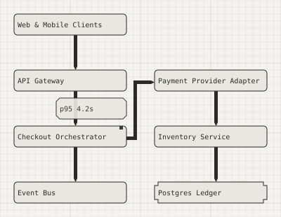</div>
<figcaption><b>agent-session.svg</b>verification run: an agent authoring over real MCP<br>14 KB</figcaption>
</figure>
<figure>
<div class="thumb">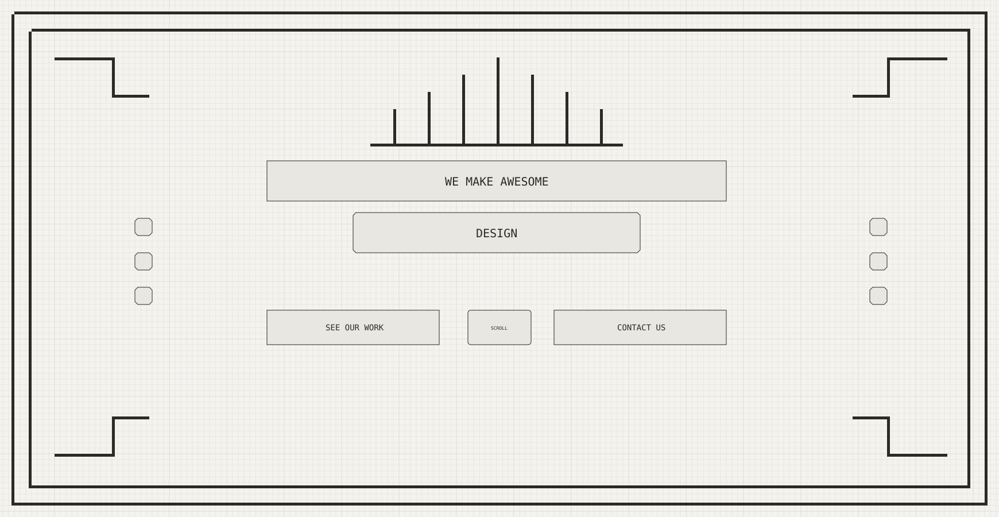</div>
<figcaption><b>art-deco-hero.svg</b>dense decorative composition study<br>157 KB</figcaption>
</figure>
<figure>
<div class="thumb">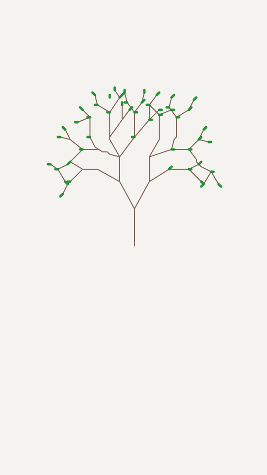</div>
<figcaption><b>branching-tree.svg</b>65 branch segments + 50 leaves on an overlay page<br>13 KB</figcaption>
</figure>
<figure>
<div class="thumb">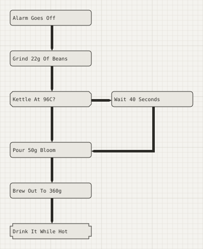</div>
<figcaption><b>coffee-ritual.svg</b>narrative sequence study<br>15 KB</figcaption>
</figure>
<figure>
<div class="thumb"></div>
<figcaption><b>condenser-image-workflow.svg</b>photo embed / dither / simplify proof (4.5 MB)<br>4,479 KB</figcaption>
</figure>
<figure>
<div class="thumb">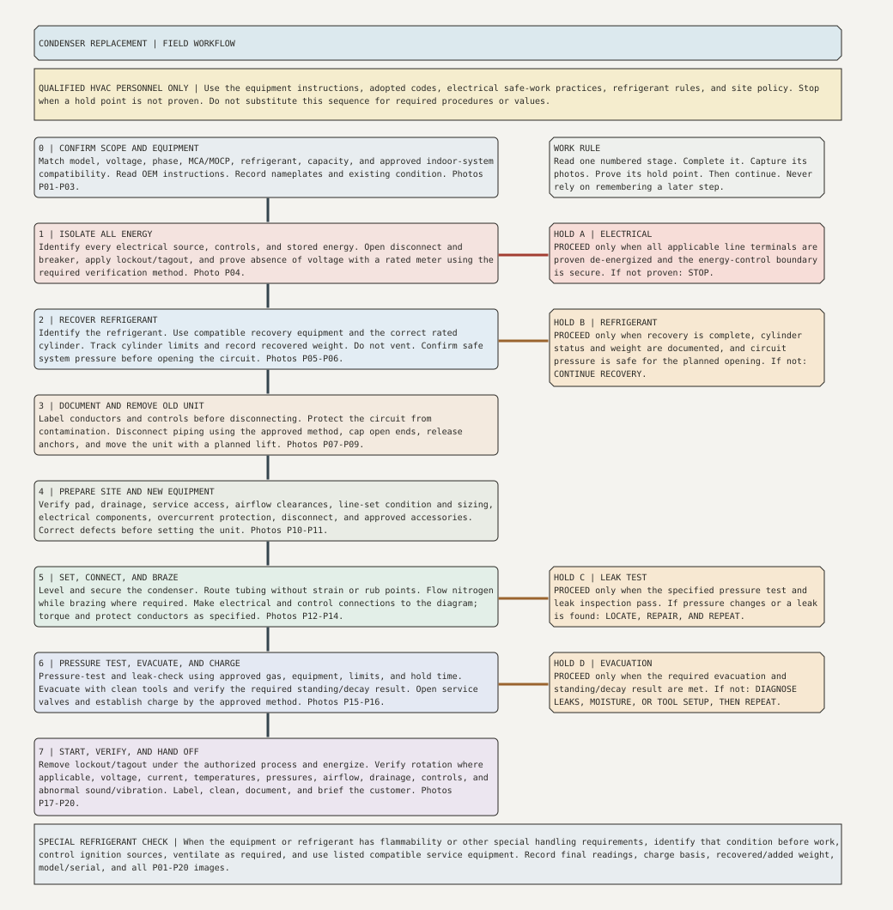</div>
<figcaption><b>condenser-replacement-field-guide.svg</b>HVAC field guide, 27 committed operations<br>18 KB</figcaption>
</figure>
<figure>
<div class="thumb">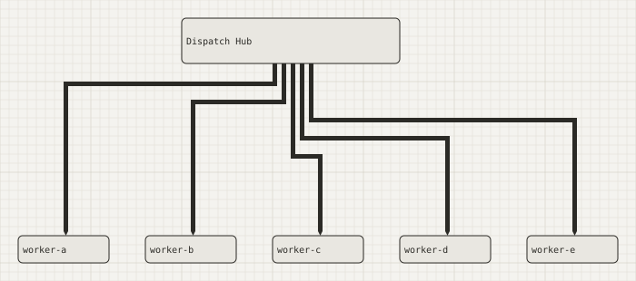</div>
<figcaption><b>constraint-stress.svg</b>crowded-route constraint stress example<br>30 KB</figcaption>
</figure>
<figure>
<div class="thumb">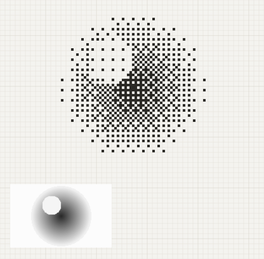</div>
<figcaption><b>dither-proof.svg</b>Bayer dither determinism proof<br>51 KB</figcaption>
</figure>
<figure>
<div class="thumb">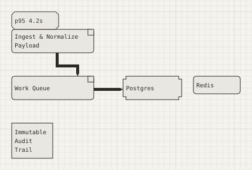</div>
<figcaption><b>example.svg</b>the canonical two-box connector example<br>12 KB</figcaption>
</figure>
<figure>
<div class="thumb"></div>
<figcaption><b>farm-animals.svg</b>this document — five silhouettes, legs folded into the outline<br>27 KB</figcaption>
</figure>
<figure>
<div class="thumb">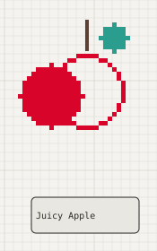</div>
<figcaption><b>gemini31-scene-apple.svg</b>Gemini 3.1 issue-log rebuild<br>23 KB</figcaption>
</figure>
<figure>
<div class="thumb">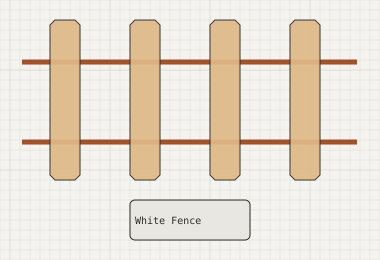</div>
<figcaption><b>gemini31-scene-fence.svg</b>Gemini 3.1 issue-log rebuild<br>39 KB</figcaption>
</figure>
</div>
</section>
<section class="page">
<h2>Everything TurtlePen has drawn <span class="badge">33 SVGs</span> <span class="badge">continued</span></h2>
<div class="gal">
<figure>
<div class="thumb"></div>
<figcaption><b>gemini31-scene-living-room-family.svg</b>Gemini 3.1 issue-log rebuild<br>24 KB</figcaption>
</figure>
<figure>
<div class="thumb">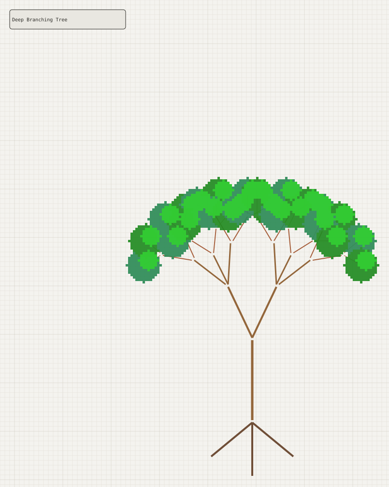</div>
<figcaption><b>gemini31-scene-tree.svg</b>Gemini 3.1 issue-log rebuild<br>59 KB</figcaption>
</figure>
<figure>
<div class="thumb">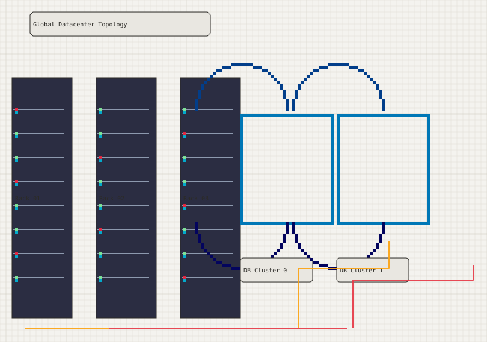</div>
<figcaption><b>gemini31-server-structure.svg</b>Gemini 3.1 issue-log rebuild<br>31 KB</figcaption>
</figure>
<figure>
<div class="thumb">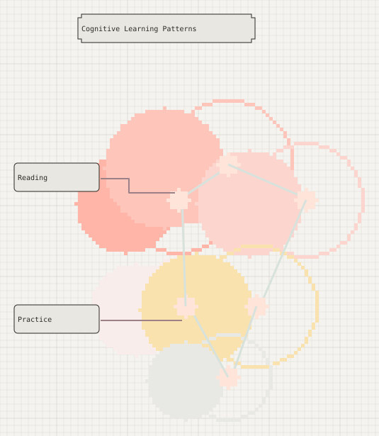</div>
<figcaption><b>gemini31-teaching-loop.svg</b>Gemini 3.1 issue-log rebuild<br>42 KB</figcaption>
</figure>
<figure>
<div class="thumb">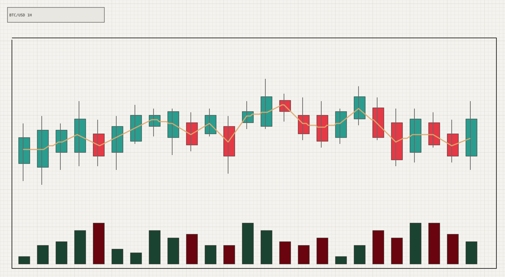</div>
<figcaption><b>gemini31-technical-analysis.svg</b>Gemini 3.1 issue-log rebuild<br>24 KB</figcaption>
</figure>
<figure>
<div class="thumb">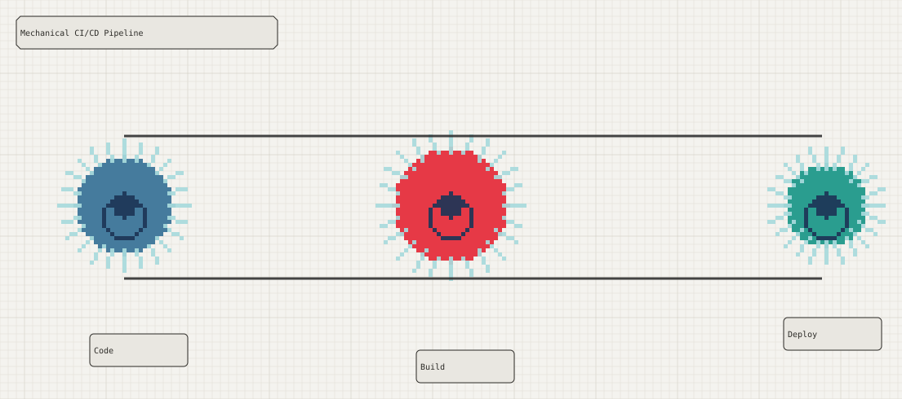</div>
<figcaption><b>gemini31-workflow.svg</b>Gemini 3.1 issue-log rebuild<br>45 KB</figcaption>
</figure>
<figure>
<div class="thumb">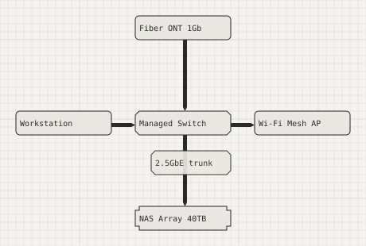</div>
<figcaption><b>home-lab-network.svg</b>network diagram — 100% straight runs, legitimately<br>10 KB</figcaption>
</figure>
<figure>
<div class="thumb">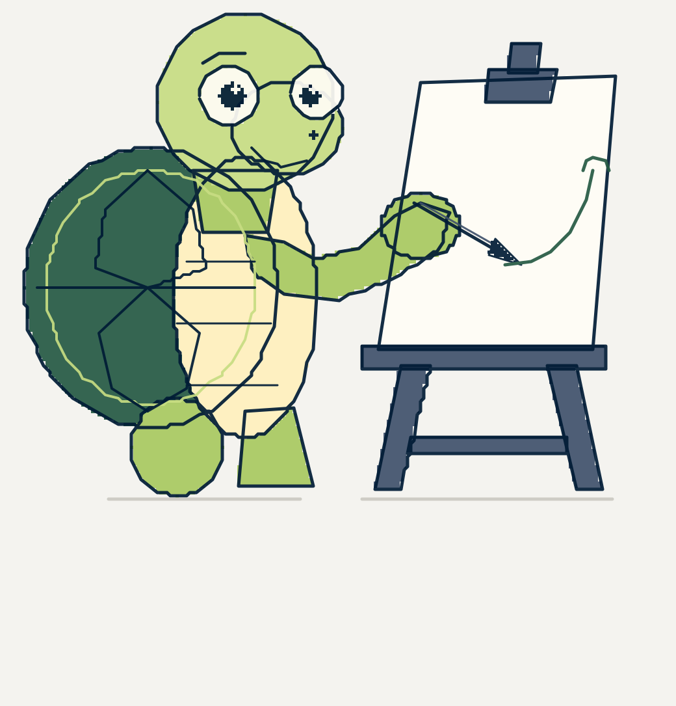</div>
<figcaption><b>logo-mark.svg</b>logo mark alone<br>54 KB</figcaption>
</figure>
<figure>
<div class="thumb">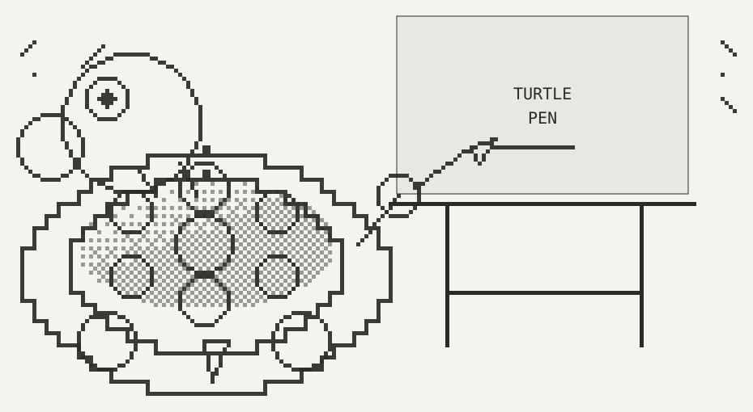</div>
<figcaption><b>logo.svg</b>canonical brand logo, authored on the lattice<br>54 KB</figcaption>
</figure>
<figure>
<div class="thumb">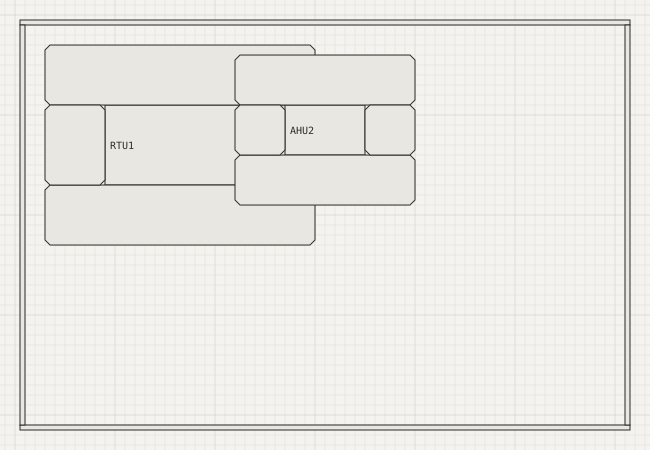</div>
<figcaption><b>mechroom.svg</b>mechanical room plan<br>10 KB</figcaption>
</figure>
<figure>
<div class="thumb">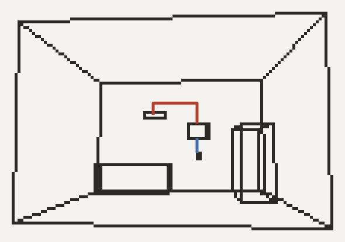</div>
<figcaption><b>minisplit-3d.svg</b>perspective_scene projection from real room inches<br>66 KB</figcaption>
</figure>
<figure>
<div class="thumb">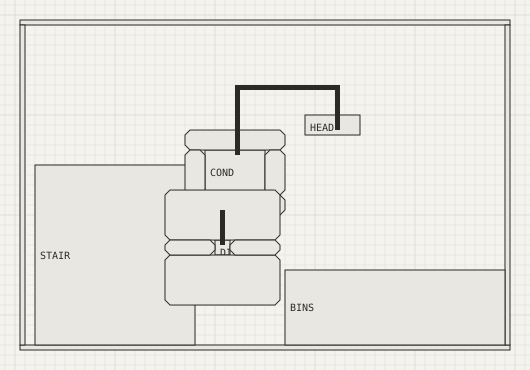</div>
<figcaption><b>minisplit-elevation.svg</b>dimensioned wireframe elevation<br>12 KB</figcaption>
</figure>
</div>
</section>
<section class="page">
<h2>Everything TurtlePen has drawn <span class="badge">33 SVGs</span> <span class="badge">continued</span></h2>
<div class="gal">
<figure>
<div class="thumb">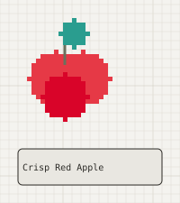</div>
<figcaption><b>scene-apple.svg</b>scene study<br>8 KB</figcaption>
</figure>
<figure>
<div class="thumb">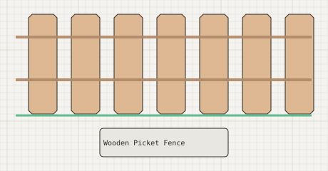</div>
<figcaption><b>scene-fence.svg</b>scene study<br>8 KB</figcaption>
</figure>
<figure>
<div class="thumb">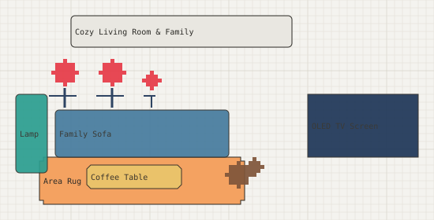</div>
<figcaption><b>scene-living-room-family.svg</b>scene study<br>12 KB</figcaption>
</figure>
<figure>
<div class="thumb">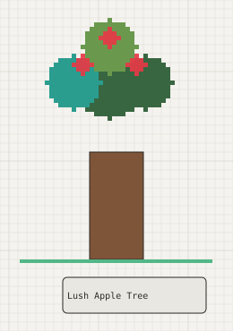</div>
<figcaption><b>scene-tree.svg</b>scene study<br>11 KB</figcaption>
</figure>
<figure>
<div class="thumb">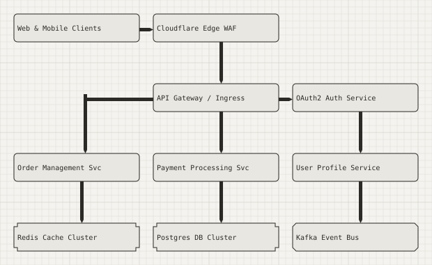</div>
<figcaption><b>server-structure-ha-microservices.svg</b>HA microservices architecture<br>18 KB</figcaption>
</figure>
<figure>
<div class="thumb">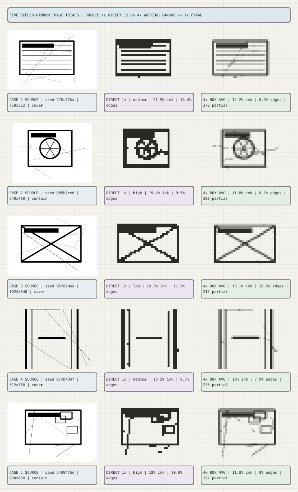</div>
<figcaption><b>supersample-random-five.svg</b>five seeded-random 4x supersample trials<br>185 KB</figcaption>
</figure>
<figure>
<div class="thumb">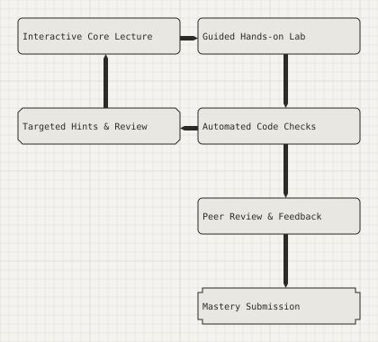</div>
<figcaption><b>teaching-mastery-learning-cycle.svg</b>mastery learning cycle<br>12 KB</figcaption>
</figure>
<figure>
<div class="thumb">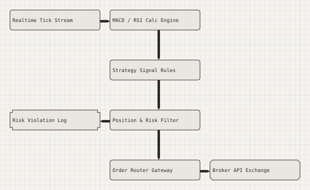</div>
<figcaption><b>technical-analysis-quant-engine.svg</b>quant engine technical analysis<br>13 KB</figcaption>
</figure>
<figure>
<div class="thumb">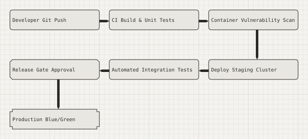</div>
<figcaption><b>workflow-cicd-deployment-pipeline.svg</b>CI/CD deployment pipeline<br>12 KB</figcaption>
</figure>
</div>
</section>